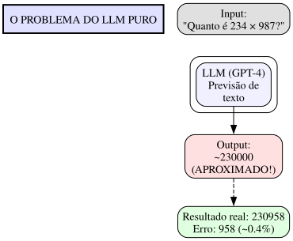
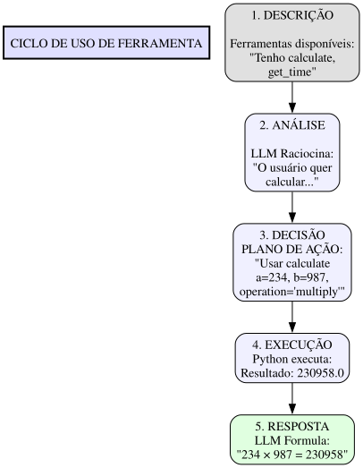
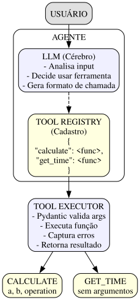

O problema do LLM puro
LLMs são modelos de linguagem. Eles preveem texto, não calculam.
Pergunta: "Quanto é 234 × 987?"
O modelo não calcula. Ele prevê a resposta baseado em padrões do treinamento. Pode acertar (se viu esse cálculo antes), mas geralmente erra em números grandes.

A solução: ferramentas (Tools)
Ferramenta = função Python que o agente pode chamar.
Como funciona o ciclo:

Arquitetura de Ferramentas
Diagrama de Componentes

Referências Importantes
Paper: Toolformer
Título: "Toolformer: Language Models Can Teach Themselves to Use Tools" Autores: Timo Schick, Jane Dwivedi-Yu, Roberto Dessì, et al. Ano: 2023 Link: arXiv:2302.04761
Paper: ReAct
Título: "ReAct: Synergistic Reasoning and Acting in Language Models" Autores: Shunyu Yao, et al. Ano: 2022
O segredo: descrição clara
O modelo decide baseado na descrição.
Descrição RUIM:
Nome: calculadora Descrição: Calculadora.
→ Modelo não sabe QUANDO usar.
Descrição BOA:
Nome: calculadora
Descrição: Resolve expressões matemáticas e retorna o resultado exato.
Use quando precisar fazer cálculos numéricos.
Entrada: string com expressão matemática (ex: "2 + 2", "10 * 5", "(5 + 3) / 2")
Saída: string com o resultado numérico
→ Modelo entende quando E como usar.
Implementação Real
Código: Calculadora Segura
""" Implementação segura de uma calculadora para agentes. Usa AST parsing para evitar injeção de código. """ import re import ast import operator from typing import Union OPERADORES_PERMITIDOS = { ast.Add: operator.add, ast.Sub: operator.sub, ast.Mult: operator.mul, ast.Div: operator.truediv, ast.FloorDiv: operator.floordiv, ast.Mod: operator.mod, ast.Pow: operator.pow, ast.USub: operator.neg, ast.UAdd: operator.pos, } def calculadora_segura(expressao: str) -> Union[int, float, str]: """ Avalia uma expressão matemática de forma segura. Args: expressao: String com a expressão matemática (ex: "2 + 2", "10 * 5") Returns: Resultado da expressão como número ou mensagem de erro Exemplos: >>> calculadora_segura("2 + 2") 4 >>> calculadora_segura("10 * 5") 50 >>> calculadora_segura("(5 + 3) / 2") 4.0 """ # Validação de entrada if not expressao or not isinstance(expressao, str): return "Erro: expressão não pode estar vazia" expressao = expressao.strip() # Verificar caracteres válidos if not re.match(r'^[\d\s\+\-\*\/\%\(\)\.\^]+$', expressao): return f"Erro: caracteres inválidos em '{expressao}'" try: node = ast.parse(expressao, mode='eval') def avaliar(node): """Avalia recursivamente a AST de forma segura.""" if isinstance(node, ast.Num): return node.n elif isinstance(node, ast.Constant): if isinstance(node.value, (int, float)): return node.value raise ValueError(f"Tipo não suportado: {type(node.value)}") elif isinstance(node, ast.BinOp): left = avaliar(node.left) right = avaliar(node.right) op_type = type(node.op) if op_type in OPERADORES_PERMITIDOS: return OPERADORES_PERMITIDOS[op_type](left, right) raise ValueError(f"Operador não permitido: {op_type.__name__}") elif isinstance(node, ast.UnaryOp): operand = avaliar(node.operand) op_type = type(node.op) if op_type in OPERADORES_PERMITIDOS: return OPERADORES_PERMITIDOS[op_type](operand) raise ValueError(f"Operador unário não permitido: {op_type.__name__}") else: raise ValueError(f"Nó não suportado: {type(node).__name__}") resultado = avaliar(node.body) # Formatar resultado if isinstance(resultado, float): if resultado == int(resultado): return int(resultado) return round(resultado, 10) return resultado except SyntaxError: return f"Erro: expressão inválida '{expressao}'" except ZeroDivisionError: return "Erro: divisão por zero" except Exception as e: return f"Erro: {str(e)}" # Testes if __name__ == "__main__": testes = [ ("2 + 2", 4), ("10 * 5", 50), ("(5 + 3) / 2", 4.0), ("2 ** 10", 1024), ("100 / 0", "Erro"), ] for expr, esperado in testes: resultado = calculadora_segura(expr) print(f"{expr} = {resultado}")
Exercícios Práticos
Exercício 1: Ferramenta de Horário
Implemente uma ferramenta que retorna a data e hora atual formatadas.
📝 Gabarito
from datetime import datetime def obter_horario(formato: str = "%d/%m/%Y %H:%M:%S") -> str: """ Retorna a data e hora atual formatada. Args: formato: String de formato (default: dd/mm/yyyy HH:MM:SS) Returns: String com data/hora formatada Exemplos: >>> obter_horario() "26/03/2025 14:30:00" >>> obter_horario("%Y-%m-%d") "2025-03-26" """ return datetime.now().strftime(formato) # Descrição para o agente DESCRICAO_HORARIO = """ Nome: obter_horario Descrição: Retorna a data e hora atual. Use quando o usuário perguntar sobre data, hora, ou necessidade de saber "agora". Parâmetros: - formato (opcional): formato da saída (default: dd/mm/yyyy HH:MM:SS) Saída: string com data/hora formatada """
Exercício 2: Ferramenta de Contagem de Palavras
Implemente uma ferramenta que conta palavras, caracteres e frases de um texto.
📝 Gabarito
import re def contar_texto(texto: str) -> dict: """ Conta palavras, caracteres e frases de um texto. Args: texto: Texto a ser analisado Returns: Dicionário com contagens Exemplos: >>> contar_texto("Olá mundo. Como vai?") {"palavras": 4, "caracteres": 18, "frases": 2} """ if not texto: return {"palavras": 0, "caracteres": 0, "frases": 0} palavras = len(texto.split()) caracteres = len(texto) frases = len(re.split(r'[.!?]+', texto)) if texto.strip()[-1] not in '.!?': frases -= 1 frases = max(0, frases) return { "palavras": palavras, "caracteres": caracteres, "frases": frases } # Descrição para o agente DESCRICAO_CONTADOR = """ Nome: contar_texto Descrição: Analisa um texto e retorna estatísticas sobre ele. Use quando o usuário quiser saber o tamanho de um texto. Parâmetros: - texto: texto a ser analisado (obrigatório) Saída: JSON com palavras, caracteres e frases """
Provedores Gratuitos para Google Colab
Para testar agentes de IA no Google Colab sem gastar dinheiro, você tem várias opções gratuitas.
Comparação rápida:
| Provedor | Custo | Limites | Modelos |
|---|---|---|---|
| Google Gemini | Gratuito | 15 RPM, 1M tokens/dia | Gemini Flash, Gemini Pro |
| Hugging Face | Gratuito | Rate limit variável | Modelos open-source |
| Ollama + Colab | Gratuito | GPU do Colab | Qwen, Llama, etc. |
| LM Studio | Gratuito | GPU local | Qual modelo baixar |
Importante: Sempre use getpass para API keys no Colab!
import getpass import os # NUNCA coloque a key direto no código! os.environ["MINHA_API_KEY"] = getpass.getpass("Digite sua API key: ")
Google Gemini API
O Gemini é gratuito com limite generoso. Perfeito para começar.
# Instalação no Colab # !pip install google-genai from google import genai from google.genai import types import getpass import os # Configurar API key (novo SDK: usar Client) api_key = getpass.getpass("Digite sua Google API key: ") client = genai.Client(api_key=api_key) # Chat com memória (novo SDK) chat = client.chats.create(model="gemini-2.0-flash") response = chat.send_message("Olá! Qual é a capital do Brasil?") print(response.text) # Continuar conversa response = chat.send_message("E quantos habitantes ela tem?") print(response.text)
Vantagens do Gemini:
- 1 milhão de tokens/dia gratuito
- API estável e bem documentada
- Funciona bem no Colab
- flash é rápido e barato
Desvantagens:
- Rate limiting (15 requests/minuto)
- Precisa de conta Google
Hugging Face Inference API
# Instalação no Colab # !pip install huggingface-hub from huggingface_hub import InferenceClient import getpass import os # Token gratuito em: https://huggingface.co/settings/tokens hf_token = getpass.getpass("Digite seu Hugging Face token: ") client = InferenceClient(token=hf_token) # Usar modelo gratuito response = client.chat.completions.create( model="Qwen/Qwen2.5-72B-Instruct", messages=[ {"role": "system", "content": "Você é um assistente útil."}, {"role": "user", "content": "Qual é a capital da França?"} ] ) print(response.choices[0].message.content)
Modelos gratuitos populares no HF:
Qwen/Qwen2.5-72B-Instruct- Rápido e capazmeta-llama/Llama-3.2-3B-Instruct- Compactomicrosoft/Phi-3-mini-4k-instruct- Muito pequeno
Ollama no Google Colab
Roda modelos localmente usando GPU do Colab (gratuito).
# Instalar Ollama no Colab # !curl -fsSL https://ollama.com/install.sh | sh # !ollama serve & # Baixar modelo # !ollama pull qwen3.5:4b # Usar via API import requests import json def ollama_chat(mensagem: str, modelo: str = "qwen3.5:4b") -> str: """Envia mensagem para Ollama local.""" response = requests.post( "http://localhost:11434/api/chat", json={ "model": modelo, "messages": [{"role": "user", "content": mensagem}], "stream": False } ) return response.json()["message"]["content"] # Uso resposta = ollama_chat("Olá! Qual é a capital do Brasil?") print(resposta)
Modelos recomendados para Ollama:
qwen3.5:4b- Rápido, bom para testesqwen3.5:9b- Mais capaz, ainda rápidollama3.2:3b- Alternativa compacta
Lista completa: ollama list no terminal
# Ollama com histórico de conversa def ollama_chat_com_memoria( mensagens: list, nova_mensagem: str, modelo: str = "qwen3.5:4b" ) -> tuple[str, list]: """ Chat com memória no Ollama. Returns: Tupla (resposta, histórico_atualizado) """ # Adiciona nova mensagem ao histórico mensagens.append({"role": "user", "content": nova_mensagem}) response = requests.post( "http://localhost:11434/api/chat", json={ "model": modelo, "messages": mensagens, "stream": False } ) resposta = response.json()["message"]["content"] # Adiciona resposta ao histórico mensagens.append({"role": "assistant", "content": resposta}) return resposta, mensagens # Uso com histórico historico = [{"role": "system", "content": "Você é um assistente útil."}] r1, historico = ollama_chat_com_memoria(historico, "Oi!") r2, historico = ollama_chat_com_memoria(historico, "Qual meu nome se eu disse antes?") print(r2) # Vai lembrar que você disse "Oi!"
LM Studio
LM Studio é uma interface gráfica para rodar modelos locais. Não roda direto no Colab, mas é ótimo para desenvolvimento local.
# LM Studio serve uma API compatível com OpenAI # em localhost:1234 from openai import OpenAI # Conectar ao LM Studio local client = OpenAI( base_url="http://localhost:1234/v1", api_key="not-needed" # LM Studio não precisa de key ) response = client.chat.completions.create( model="local-model", # LM Studio escolhe o modelo carregado messages=[ {"role": "user", "content": "Olá!"} ] ) print(response.choices[0].message.content)
Interface Genérica para Todos os Provedores
"""Interface unificada para múltiplos provedores LLM.""" from typing import List, Dict from abc import ABC, abstractmethod import getpass import os def criar_cliente(provedor: str = "gemini") -> object: """ Cria um cliente para o provedor especificado. Args: provedor: "gemini", "huggingface", "ollama", ou "lmstudio" Returns: Objeto cliente configurado """ if provedor == "gemini": from google import genai api_key = getpass.getpass("Google API key: ") return genai.Client(api_key=api_key) elif provedor == "huggingface": from huggingface_hub import InferenceClient token = getpass.getpass("HF Token: ") return InferenceClient(token=token) elif provedor == "ollama": import requests return "ollama" # Ollama não precisa de cliente elif provedor == "lmstudio": from openai import OpenAI return OpenAI(base_url="http://localhost:1234/v1", api_key="not-needed") else: raise ValueError(f"Provedor desconhecido: {provedor}") # Uso # cliente = criar_cliente("gemini") # cliente = criar_cliente("ollama") # cliente = criar_cliente("lmstudio")
Qual escolher?
- Começando: Use Gemini no Colab - mais fácil e estável
- Sem internet: Use Ollama com modelos baixados
- Desenvolvimento local: Use LM Studio com interface gráfica
- Modelos específicos: Use Hugging Face API